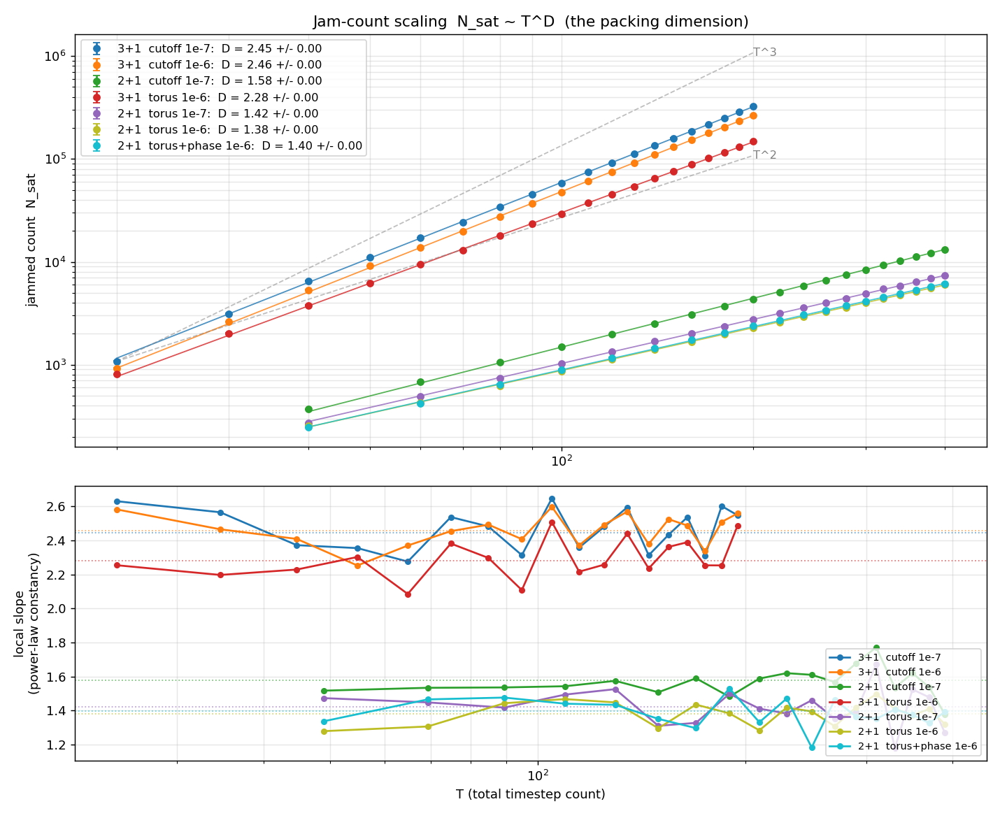
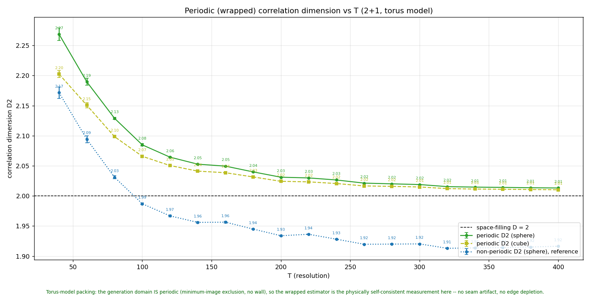
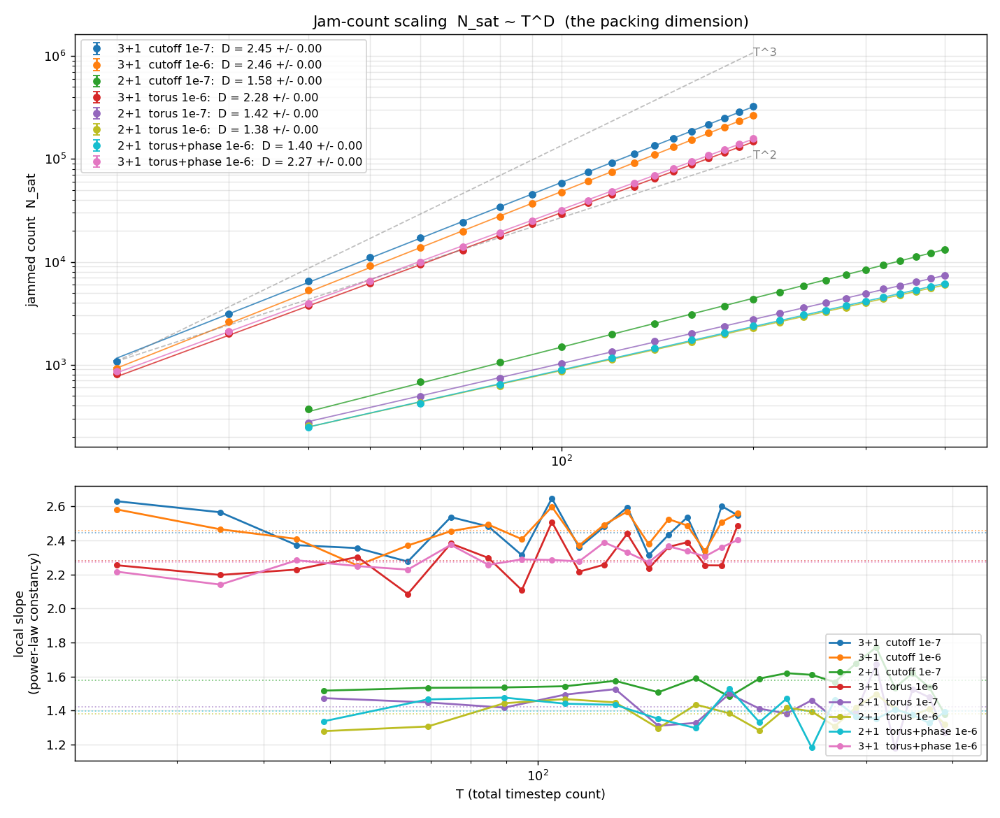
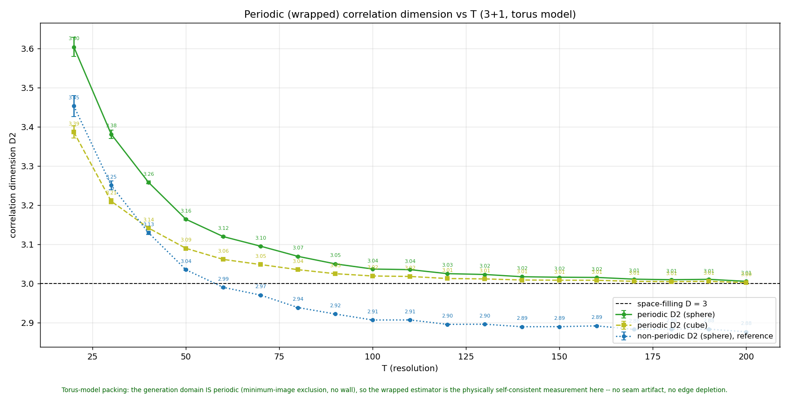

The 07-02 torus experiments predate the phase schema — until
today it existed only in the viewer. The engines now take
--phase: the wiggle term gains a free phase
f ~ U[0, π) on even frequencies (odd
frequencies must stay phase-free for the loop to close at
z = π), each component is re-pinned to zero at the
endpoints by an a·sin(f) offset, and the z grid
becomes the symmetric T-interior-points-of-(0, π) indexing.
Phase-free proposals keep the verbatim pre-phase arithmetic, so
baselines are untouched.
Two campaigns repeat the 07-02 measurement with the new knob:
torus2d_phase_e6 (2+1, T = 40–400 step 20, 8 seeds,
1e-6 cutoff) and torus2d_e6 — the no-phase torus
baseline at the same cutoff, which it turned out had never
been run (the 07-02 2+1 torus dataset is 1e-7). Both completed in
~20 minutes on the two 3080s. The comparison is one-knob: same model,
same grid, same seeds, same cutoff, phases on/off.
Count exponent, full ladder: 1.396 ± 0.002
with phases vs 1.382 ± 0.002 without;
T ≥ 100 half: 1.375 ± 0.004 vs 1.383 ± 0.006.
Differences sit at the 0.01 level with mixed sign — the
exponent is unchanged.
The prefactor moves slightly: at T = 400 the phased model jams at
⟨N_sat⟩ = 6139 vs 5974 without (+2.8%) — phases add
packing freedom without changing how the jam scales.
Cutoff sensitivity note: no-phase torus 2+1 reads 1.382 at 1e-6 vs
1.422 at 1e-7 — a cutoff decade moves the 2+1 torus exponent
~0.04, about twice the <0.02 the 3+1 hard-wall cutoff study
showed. Worth remembering when quoting 2+1 values across cutoffs.

Jam count N_sat vs total resolution T (log-log), all ladders. The two
new 2+1 curves — torus at 1e-6 without phases (olive) and with
phases (cyan) — run on top of each other: same slope, a
few-percent prefactor offset. Lower panel: local slopes stay flat for
both.
Takeaway: in 2+1, the phase degrees of freedom are a
packing-density knob, not a scaling knob. The count
exponent keeps reading as a property of the slope budget. The 3+1
phase campaign (torus3d_phase_e6) is still working the
T ≥ 160 tail on deep-thought — entry to follow when it lands;
its early T = 200 points jam ~7% above the no-phase baseline, so the
prefactor effect appears there too.
Corrdim was averaging variants together; the wrapped D2 is space-filling and phase-blind
Bug fix in the report path + wrapped estimator generalised · code
3b39dd2,
bad6d88
Caught because three different datasets returned identical
correlation-dimension reports, to the third decimal, with a suspicious
24 “seeds” per T. Variant campaigns share a dumps directory
(data/torus/dumps now holds _tor,
_tor_e6 and _tor_ph_e6 files at the same
(T, seed)), and the report glob matched them all — averaging
three different models into one number. aggregate() now
takes a job-name filter and the CLI passes the store’s own names
(curve-path stems); a regression test pins it. The 07-02 numbers are
unaffected — each dumps directory held a single variant back
then; the mixing only became possible once today’s campaigns
landed sibling variants beside them.
A second catch followed: the braidlab corrdim report uses
the non-periodic estimator (unwrapped positions, open-boundary
distances). Its per-variant numbers — 1.915 with phases, 1.916
without, 1.913 for the 07-02 1e-7 set — are phase-blind but they
are the boundary artifact, the 2+1 sibling of the ~2.89 the 07-02 notes
flagged in 3+1. The physical measurement is the wrapped (minimum-image)
estimator, so analyze_periodic_corrdim grew
--dim 2|3 and a variant --suffix filter.
Wrapped, seed-averaged over T ≥ 100: D2 = 2.032 (sphere) /
2.025 (cube) with phases, 2.033 / 2.026
without — the 2+1 matter slices are space-filling, the
probe-shape gap collapses, and the 07-02 exact-homogeneity result
extends to 2+1 and survives the phase degrees of freedom. The
non-periodic reference on the same clouds reads 1.93 — the
artifact, reproduced on demand.

Wrapped correlation dimension vs T, 2+1 torus with phases (8 seeds
per T): periodic sphere/cube on the D = 2 line, non-periodic
reference below — the boundary artifact made visible.
Same measurement, no-phase baseline at the same cutoff —
indistinguishable from the phased dataset point by point.
3+1 with phases: exponent and homogeneity unchanged, jam +7%
The 3+1 phase campaign landed (same grid as torus3d_e6:
T = 20–200 step 10, 5 seeds, 1e-6). The 2+1 picture repeats in
every particular:
Count exponent: 2.273 ± 0.003 full ladder /
2.331 ± 0.003 for T ≥ 100, vs
2.282 / 2.328 without phases — unchanged. Notably the phased
ladder is cleaner (local-slope scatter 0.066 vs 0.114),
and its high-T half sits right at the 2.33 the 07-02 caveat
suspected was the converged no-phase value.
Jam prefactor: ⟨N_sat⟩ = 158,840 vs 148,606 at T = 200
(+6.9%) — the same more-packing-freedom
effect as 2+1, about twice the size.
Wrapped D2 (T ≥ 100 mean): 3.019 (sphere) / 3.010
(cube) with phases vs 3.021 / 3.011 without; non-periodic
reference ~2.89 on both. Exact homogeneity survives the phases.

All ladders with the 3+1 torus+phase dataset (pink) added: parallel
to the no-phase torus (red), a constant few-percent offset above it.
Lower panel: the phased local slope is the flattest 3+1 trace on the
chart.

Wrapped correlation dimension vs T, 3+1 torus with phases: periodic
sphere/cube descend onto the space-filling D = 3 line with the
probe-shape gap collapsed, exactly as the no-phase torus did on
07-02.
Takeaway, both dimensions now in: the phase degrees of freedom change
how much packs (+2.8% in 2+1, +6.9% in 3+1 at the top of the
ladder) but not how packing scales (count exponents unchanged)
and not the slice geometry (wrapped D2 stays space-filling). The
structure of the model still lives entirely in the packing-number
exponent — and the phased 3+1 ladder’s flatness firms up
2.33 as the converged 3+1 torus exponent.